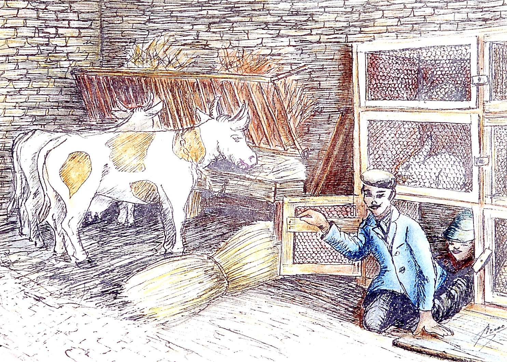
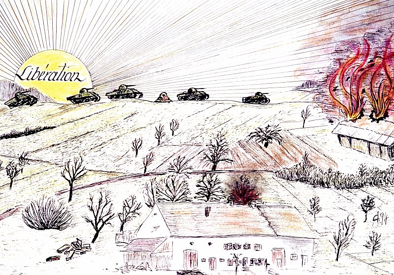
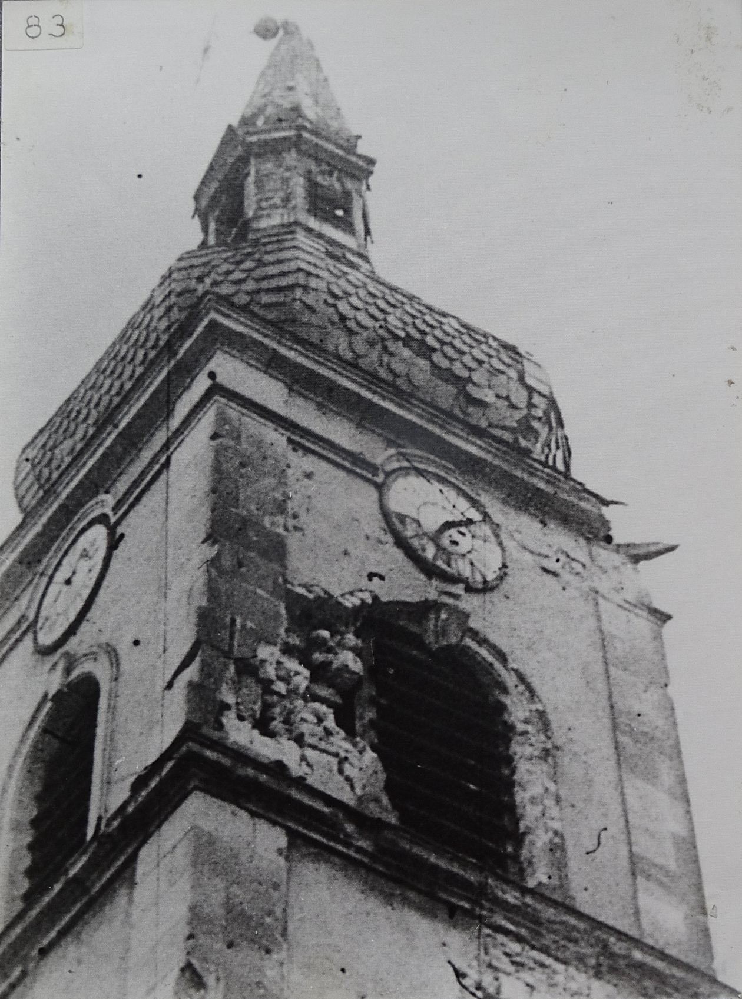
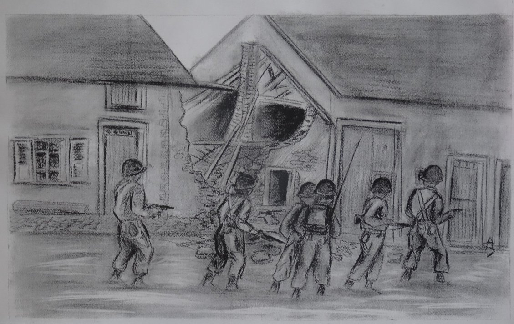
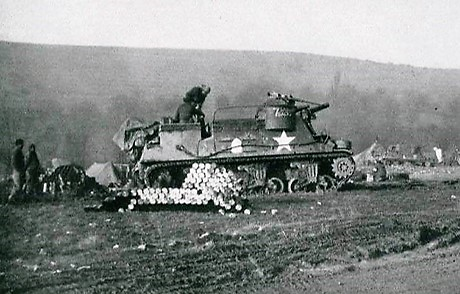

5 décembre 1944 - Rouhling libérée de l’Allemagne Nazie …
17 février 1945 – Départ des Américains …
Il y eut un immense espoir après le 06 juin 1944, quand les habitants entendirent sur radio Londres l’annonce du débarquement des alliés en Normandie. On pensa que ce n’était maintenant plus qu’une question de jours. Mais l’attente dura encore 6 longs mois.
C'était un espoir fou, un optimisme à toute épreuve, même pendant les années noires, entre 1941 et début 1942, où les troupes de « l'Axe » étaient vainqueurs sur tous les fronts. Le fameux salut « gehn’ se bal » (s'en vont-ils bientôt) été sur toutes les lèvres. On peut dire que l’attente fut longue et que les jours devenaient des mois. Le débarquement en juin, la libération de Paris en août, Metz le 22 novembre, et elle ne venait toujours pas chez nous. Le jour de la libération fut gris et pluvieux, comme souvent en hiver à Rouhling.
Vers la fin du mois de novembre 1944, le village occupé par les troupes allemandes, était sous le feu de l'artillerie Américaine qui tirait plusieurs salves par jour. Les habitants se terraient dans les caves ne montant que pour cuisiner et panser les quelques animaux que les Allemands leurs avaient laissés. Quatre ou cinq familles ne se sentant pas en sécurité à Rouhling avaient cherché refuge dans les immenses galeries souterraines de la « Steenkull », les carrières de Welferding-Gungling.
Le courant étant coupé depuis plusieurs semaines, la population s'éclairait à l'acétylène. Comme le boulanger de Grosbliederstroff ne montait plus, les femmes faisaient le pain elles-mêmes. L'unique épicerie n'était plus approvisionnée, mais les habitants ayant tous au moins un petit train de culture, se débrouillaient avec les moyens du bord. Côté victuailles il n'y avait pas pénurie.
Le centre du village rasé à la suite des événements de 1940, les étant habitants regroupés dans les maisons des rues extérieures, il n'y avait pas de contact direct entre les divers quartiers. Tous les jours, des émissaires allaient demander des nouvelles des autres groupes.
Mais, ce qui portaient l'attente à son paroxysme, c'est qu'en plus des 300 habitants sous le feu des canons, il y avait une trentaine de jeunes hommes du village et des environs, réfractaires ou déserteurs de l'armée allemande, cachés sous les ruines d’une maison où ils avaient construit une cache, qui était appelé le trou. Certains cachés depuis plus de douze mois, attendaient avec impatience le départ des troupes nazies.
Comme les Allemands logés dans presque toutes les maisons et circulaient dans le village, personne n’était à l'abri d'une imprudence. Que ce soit de la part des réfractaires ou d’un hasard qui aurait pu faire découvrir le poteau rose et exposer toute la commune aux représailles.

La nuit du 4 au 5 décembre, la dernière unité allemande de blindés légers évacua le village, direction « das Reich ». Le matin du 5, tout était calme …, le calme avant la tempête. L'artillerie Américaine avait cessé ses tirs. Le silence était lourd et le village était vide de ses occupants. Seuls deux soldats allemands, vers la fin de la matinée, passèrent de cave en cave pour demander si les Américains étaient là.
Vers 14h, un avion d'observation Américain pétaradait au-dessus de la localité. Le 05 décembre vers 15h, les rouhlingeois entendirent des vrombissements qui devenaient de plus en plus forts et virent apparaître à l’horizon en direction du « Mayersbuch », côté ouest vers Cadenbronn, des tourelles de chars, puis de nombreux chars qui contournèrent le village. À cette distance on ne pouvait pas reconnaître la nationalité des engins. Beaucoup d'habitants s'étaient mis aux fenêtres ou sortaient dans la rue pour voir.

À cet instant, quelques allemands qui tenaient encore un poste près de la forêt, à la sortie du village, ouvrirent le feu à la mitrailleuse en direction des chars. Ceux-ci tournèrent leurs canons vers le nid de mitrailleuse, qui se situait en direction du village et commencèrent un feu d’enfer, tirant sur toutes les ouvertures. Les curieux qui s'étaient aventurés dehors, se précipitèrent dans les caves en espérant ne pas être touchés. La riposte ne dura qu’un quart d’heure et lorsque la mitrailleuse se tut, les tirs cessèrent, mais ce fut une éternité pour ceux qui courbaient le dos dans les caves. Les chars continuèrent leur route jusqu'au « Hoffstück », en bordure de la forêt de Grosbliederstroff.
La colonne s’arrêta, les tourelles s'ouvrirent, les chefs de chars sortirent et allumèrent une cigarette. Les plus téméraires des habitants qui avaient tout observé, allèrent dans les caves en criant, « c’est terminé ».
On s'embrassait, on se congratulait, mais tous restaient prudents. Cependant, quelques curieux qui commençaient à mettre le nez dehors virent une colonne de fumée venant de la rue de la montagne. L'incendie fut vite localisé. C'était un hangar où Monsieur EIDESHEIM engrangeait ses récoltes qui était la proie des flammes. Puis on apprit bien vite de la part des messagers qui affluaient de tous les quartiers, que l'affrontement n'avait pas fait de victimes, ni de blessés. Les dégâts matériels étaient importants, tous les immeubles qui avaient soit une fenêtre, soit une lucarne du côté du « Mayersbusch » avait été touchés par des obus. Le clocher à lui seul avait été atteint à deux reprises et l'église davantage. Mais personne ne s'attardait à ces détails. Les Américains étaient là !
Ensuite, arriva à pied à l’entrée du village, une patrouille d'une quinzaine de GI. Ils demandèrent à un jeune homme, qui était Victor SPOHR, de les guider à travers le village et de leurs indiquer les maisons où il y avait des civils, afin de pouvoir contrôler les autres maisons susceptibles d’y avoir des Allemands.
Quand cette patrouille arriva route de Sarreguemines, quelqu'un alla annoncer la grande nouvelle aux réfractaires, qui attendaient ce moment depuis 13 mois, mais qui dormaient tranquillement. Ce fut la cohue, chacun voulant sortir le premier.

Les Américains ayant terminé leur ratissage se décrispèrent et commencèrent à fumer. Les jeunes gens se précipitèrent vers eux pour les féliciter. Ils répondirent en leur offrant des cigarettes.
Monsieur SCHWARTZ Aloyse s'approcha avec une bouteille de schnaps, mais méfiant, les soldats Américains lui demandèrent de boire le premier, ce qu’il fit en riant, ce qui dégela l'atmosphère. Les militaires s’en donnèrent à cœur joie, buvant à même le goulot.

Dans le village c’était la fête, les habitants trinquant avec les libérateurs et tout le monde fêta dignement un tel évènement. La nuit commençait à tomber et les Américains suggérèrent à la population de ne pas quitter leur abri durant l'obscurité pour éviter les bavures, car le couvre-feu était décrété.
Un groupe de jeunes s'étaient réunis dans la cuisine de Nicolas SCHWARTZ, pour célébrer dignement l'événement toute la nuit. C'était Saint-Nicolas qui nous avait apporté la libération dans sa hotte. Mais le pauvre fut un peu oublié ce soir-là, c'était surtout la libération qui était le plat du jour. Mais pour autant Rouhling n'avait pas fini la guerre.

Le lendemain les réfractaires se présentèrent tous ensemble aux autorités américaines pour leur remettre les armes en leur possession. Le capitaine voyant le groupe, armes à la main, dit « oh, FFI » et peu après, on leur remit le brassard des « Forces Françaises Intérieures ».

Ce statut de résistants évita aux réfractaires rouhlingeois le sort qui fut réservé à de nombreux camarades des autres villages, considérés comme des Allemands, qui furent arrêtés et internés dans des camps en Bretagne à « La Flèche ». Les jeunes réfractaires furent immédiatement engagés par l’armée américaine pour la surveillance de toutes les voies d’accès au village.
En effet, de nombreuses personnes quittaient Grosbliederstroff ou Lixing-lès-Rouhling et essayaient à travers la forêt de gagner la zone libérée, surtout des jeunes gens en situation illégale.
Les Américains ne sachant si c’étaient des Allemands ou des Lorrains, demandèrent à deux réfractaires d’accompagner la patrouille de GI pour faire le tri. Eux connaissaient les gens de Rouhling. Ils devaient, lors de leur tour de garde, signaler les étrangers qui seraient interrogés par les soldats et dirigés vers des camps de regroupement. Ces jeunes gens participèrent enfin d’une manière active à la guerre.
L'armée US arrêta son avancée à la prise de notre village et y établit ses quartiers d'hiver pour des raisons stratégiques et logistiques. L’hiver 1944/1945 fut très pluvieux et les chars en se déplaçant firent de nombreuses ornières et de la boue dans tout le village, même les poules n’arrivaient plus à traverser la route. Mais, après la pluie et la boue, ce fut le gel qui bloqua les chenilles des chars, les empêchant de se déplacer.
Le village resta en première ligne et sous le feu des canons Allemands jusqu'au 17 février 1945 au matin. Date à laquelle l'avance sur l'Allemagne fut reprise.
Raymond LEHMANN
Joseph WACK
Antoine SPOHR
